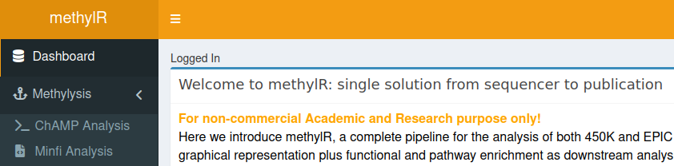
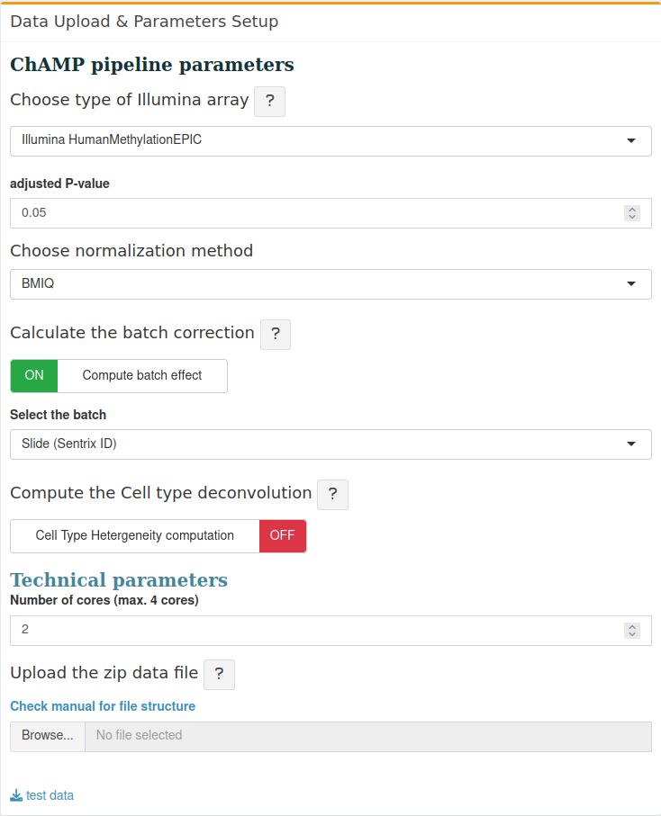
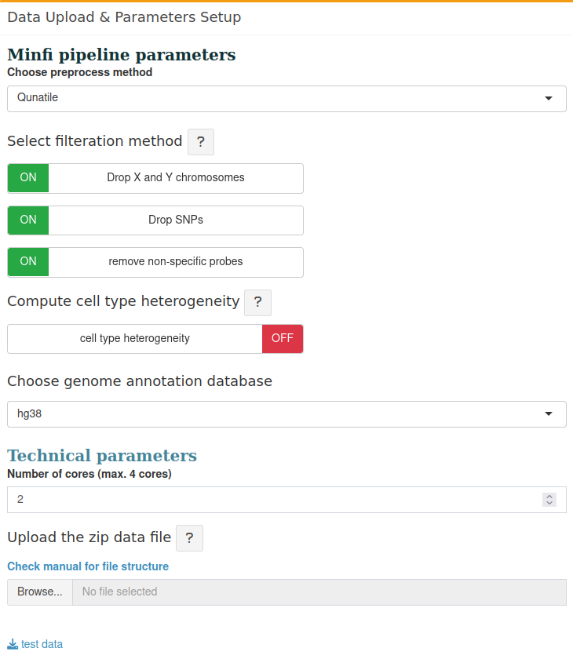

1 Methylysis
Methylysis is the most important section in methylR since it contains the tools to analyze the DNA methylation data for two different Illumina arrays, 450K and 850K array. Two of the most used well-defined pipelines are currently available in methylR: The Chip Analysis Methylation Pipeline ChAMP and minfi. Those are alternative pipelines and, although the user has the freedom to decide to test both, only the results from one of them is required to run to visualize and explore the data in the downstream sections. For new users, we suggest to run ChAMP as it is the latest, well packed and well maintained pipeline for Illumina HumanMethylation Array data analysis. Both pipelines offer different input options and parameters that can be modified based on the user’s actual data. If users wish to compare the results from both the pipelines, methylR offers this possibility through the downstream processing (Venn Analysis see Chapter 9 and UpSet Plot see Chapter 10 sections).
- After uploading the zip file See Appendix A, the pipeline will start automatically by displaying the notification “Computing methylysis, please wait…” . When the notification turns off, the user can go to different tabs to display the result. Please wait 5-10 seconds (see Appendix D, Calculation Time for each process) to display the result on the tab. Depending on the sample size, it may requires more time to display properly.
- If the methylysis page goes “dim/disconnected”, the analysis may encounter some errors during the run and the program stops working. Please refresh the page and run the same analysis again with different filters/parameters. Example, for ChAMP pipeline, if the user selects the “adjusted P-value” = 0.05 (as default), may be for the sample data, there is no differentially methylated CpGs at that value. Please change the adjusted P-value (recommend to set it at 1, and check the table after the run that what is appropriate cut-off) and run the pipeline again.
1.1 How to use
Details are provided below -
1.1.1 Data upload & Parameters setup
The current version can handle the upload of the data directory. Please put all RAW IDAT (intensity data) files (as generated by the Illumina sequencer) and the “Sample_sheet.csv” together in a directory.
1.1.2 Structure of sample_sheet.csv
The Sample_sheet.csv must have the following components -
1. Sample_Name
2. Sample_Group
3. Sentrix_ID
4. Sentrix_position
Note If the user uses Microsoft Excel to build the Sample_sheet.csv, please check that
1. Sentrix_ID : are in text format (not in number format, which Excel will change to scientific numbers and will not properly displayed).
2. Optional check: Copy and paste the Excel table of Sample_sheet in some text editor like notepad or VS code and check the format.
Every section in methylR comes with the proper testing data linked at the bottom of the page, just search for the “example data” button.
1.2 Parameters setup
1.2.1 Choose analysis algorithm
Currently, we have included two most usable algorithms to analyze the data - ChAMP and minfi.

1.2.1.1 ChAMP pipeline parameters
PLEASE NOTE: ChAMP process will do all filtration automatically, independent of User’s input. The following filtration will be done -
i. filtering probes with detection p-value > 0.01,
ii. filter out probes with <3 beads in at least 5% of samples per probe,
iii. filter all non-CpG probes
iv. filter all SNP-related probes
v. filter all multi-hit probes
vi. filter all probes located in X and Y chromosomes
Choose type of Illumina array: Two options are provided to choose, namely EPIC/850K array and 450K array from Illumina array analysis.
Adjusted P-value: User can define there own adjusted P-value to run the analysis. The default is 0.05.
Normalization: User can choose different normalization methods from the drop-down list,
- BMIQ (Beta-Mixture Quantile Normalization) (Teschendorff et al. 2013),
- PBC (Peak-Based Correction) (Dedeurwaerder et al. 2011),
The default setup will run with the BMIQ normalization method.
Please check references for different type of normalization method.
- Batch Effect Correction: ComBat function is used to correct the batch effect. User can choose whether to compute the batch effect or not by clicking the button. When the button is “green” (ON), it will prompt to select the factors for the batch effect correction, Slide, Array, Age, Sex, or Other. Select as necessary and should have the column in the Sample_sheet (check the Sample_sheet in the testdata set). If you have other option than Slide, Array, Age, or Sex, rename the column as ‘Other’ and run batch effect correction.
If the button is “red” (OFF), the pipeline will continue without analyzing the batch effect.
Please check the reference for the batch effect correction using combat method (Johnson, Li, and Rabinovic 2007).
- Cell Type Heterogeneity: Houseman et al (2013) (Houseman et al. 2012) algorithm is applied to calculate the cell-type heterogeneity from PBMC (Peripheral Bllod Mononuclear Cells) dataset using the refbase function. This is deactivated as default. Press the button to activate and run during the analysis.

1.2.1.2 Minfi pipeline parameters
Choose preprocess method : There are several methods available for preprocessing or normalizing the raw data using the RGset. Here we listed them as the user’s input options to select the preprocess/normalization method as per their choice:
- Raw: No processing of the raw data,
- SWAN: Subset Quantile Within array Normalization (Maksimovic, Gordon, and Oshlack 2012; Touleimat and Tost 2012),
- Noob: Noob preprocessing (Triche Jr et al. 2013),
- Illumina: Illumina preprocessing, as performed by Genome Studio (reverse engineered by minfi authors) (Aryee et al. 2014)
- Funnorm: Functional normalization (Fortin et al. 2014)
Select filtration method: In this section, we assigned options for the user to perform the different filters, like removal of XY chromosomes from the analysis, removal of SNPs or removal of non-specific probes from the dataset. By default, the pipeline will use p-value detection 0.01.
Compute cell type heterogeneity: similar as ChAMP, we used Houseman method to correct the cell type heterogeneity. In minfi pipeline we used default minfi function estimateCellCounts. As before, user can choose to avoid this if the samples are not from PBMC cell types.
Choose genome annotation database: To annotate the DMC list from the analysis, use the human genome reference annotation data file. For 850K array, make sure to use the hg38 array to compare the result with the output of ChAMP pipeline.

1.3 Technical setup:
Both pipelines require the user to set the following technical parameters:
- Number of cores: Both pipeline can run on 1 core which will take more time to compute the entire process. User can choose to setup the number of cores depending the availability. The default is set to 1 core for Minfi, and 2 cores for ChAMP and maximum is 4 cores.
Multi-threading for DNA methylation analysis is mainly used in the Normalization process. If you have data with more than 50 samples, using 4 cores may reduce the calculation time. If the dataset has less number of samples, increasing the number of cores will not do effectively any better time reduction (See Appendix D).
- Data upload The user should set the parameters first and choose all parameters as described above and then upload the data directory. To do that, just click on the button “Browse…” and locate the zip archive containing raw files. As soon as the pipeline finishes the upload of the data directory, it will start running the analysis.
1.4 Requirement for data upload
- idat files: all idat files, green and red as received from Illumina sequencing array should be provided for the analysis. All files should be in one directory/folder.
- Sample_sheet.csv: the “Sample_sheet.csv” should also be provided in the same directory with idat files.
Check the github repository for sample data file. You may download the Sample_sheet.csv file and use as a template for your sample_sheet.
Copyright © 2022-2023. Massimiliano Volpe and Jyotirmoy Das.